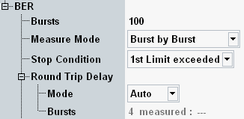

The settings in the "BER" section of the "GSM BER Configuration" dialog configure the scope of the measurement.
See also: "Statistical Settings"

Defines the number of data entities to be evaluated per measurement cycle (statistics cycle, single-shot measurement). The data entity changes with the measure mode; the size depends on the channel coder settings (see "Frame Structure for BER CS Tests"). Received data entities with CRC error do not contribute to the statistic count.
See also: "Statistical Results"
Several measure modes providing different sets of results are available.
For a detailed description of the modes, see "BER CS Measurement".
The mode "AMR Inband FER" can only be selected if an AMR codec is configured.
The mode "RBER/UFR" can only be selected if traffic mode half-rate version 1 is configured, see "Traffic Mode".
"Mean BEP" mode is suspended if the CS enhanced measurement reporting is disabled, see "Enhanced Measurement Report".
"Signal Quality" mode is suspended if the CS enhanced measurement reporting is enabled, see "Enhanced Measurement Report".
The mode "BFI" is only enabled in the DTX DL operation, see "DTX DL".
In the DTX DL operation only the following modes are applicable: "Signal Quality", "Mean BEP" and "BFI".
Option R&S CMW-KS210 is required for modes "BER", "FER FACCH", "FER SACCH", "RBER/UFR", "AMR Inband FER", and "Bad Frame Indication". (The "Burst by Burst", "Mean BEP", "RBER/FER", and "Signal Quality" modes are included in R&S CMW-KS200.)
Remote command:- "None": The measurement is performed for the selected "No. of Frames", irrespective of the limit check results.
- "1st Limit Exceeded": The measurement is stopped when the first limit is exceeded. If no limit failure occurs, the measurement is performed according to the defined "Bursts / Speech Frames / Frames / Blocks".
Use this value for measurements that are intended for checking limits, e.g. production tests.
Round-trip delay is defined as duration in bursts the loopback signal needs from a transmission to detection by the R&S CMW. Manual and automatic settings are possible. Also the measured round-trip delay is displayed.
This parameter is relevant only for measurement modes "Mean BEP" and "Signal Quality".
Note, that a false round-trip delay setting results in an increased error rate in BER measurement.
Remote command: